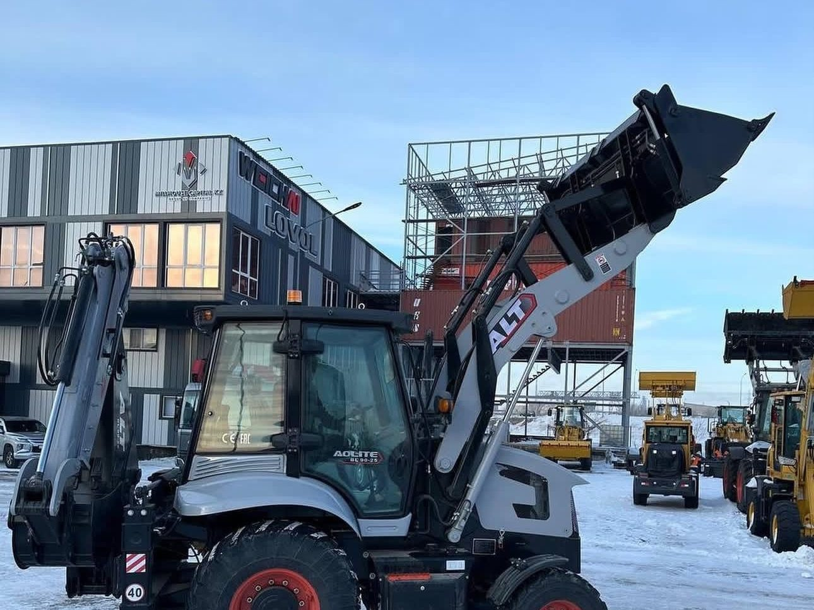
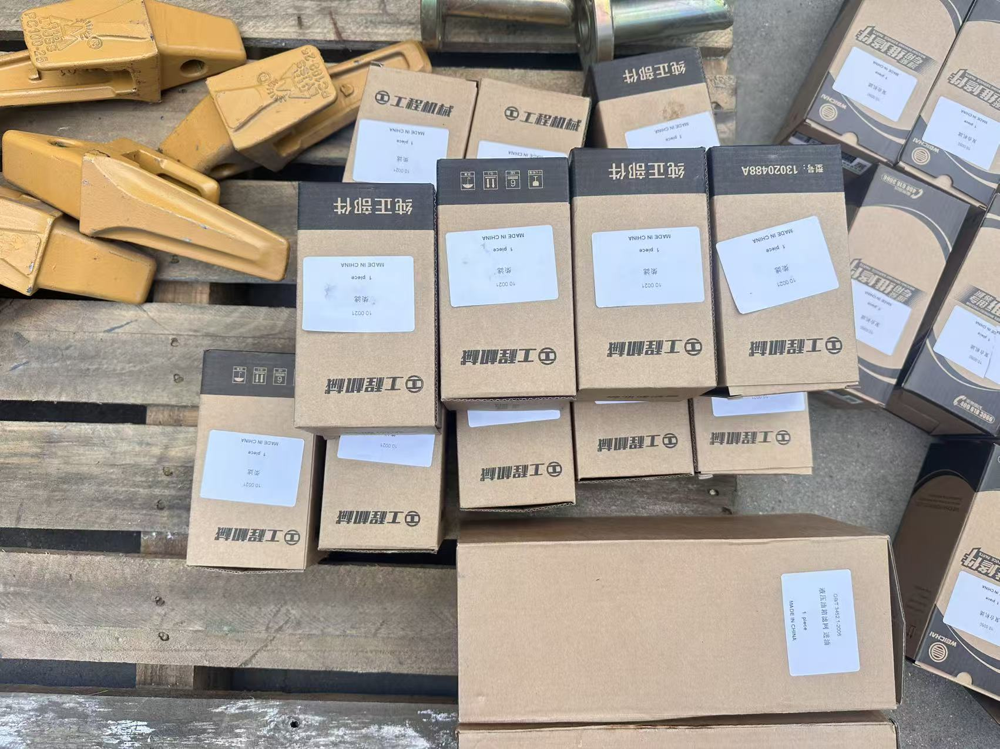

A finished machine waiting in the yard — revenue line one, in physical form. It only becomes money when it is delivered, invoiced and working, which is why the machine line is the one every dealer watches most nervously.
What the Factory Side Sees That You Cannot
A dealer's own numbers are private. What I see instead is the outside of them — and the outside is more honest than most people expect. The dealer who orders machines but never parts is telling me his customers are buying elsewhere when the filters come due. The dealer who orders parts steadily but machines rarely is telling me he has an installed base he services well and a sales problem on top of it. The dealer whose orders are machines, parts, attachments and the occasional tool kit is the one whose territory I watch grow.
I am not pretending this is accounting. It is pattern recognition from years of watching which dealers reorder and which ones go quiet. But those patterns are the reason I can write this article with a straight face: the four revenue lines below are not theory from a business book. They are the difference between the purchase orders I keep receiving and the ones that stop.
One more thing before the lines themselves, because it frames everything. A backhoe loader is a service-heavy machine in a service-light industry's clothing. It looks like a commodity — a diesel engine, a boom, a bucket — but it earns its living in markets where the customer rarely has a second machine, rarely has a mechanic on staff, and cannot afford downtime. That is the soil the four lines grow in.
Line One — The Machine: The Margin Everyone Overestimates
Start with the line everyone comes in for. You buy a machine, you sell a machine, the difference is your margin. It is real, it is immediate, and it is the line most new dealers plan their whole business around — which is the first structural mistake, and I have written about it at length in the mistakes I see from the factory side.
Here is what the machine margin actually behaves like. It is a one-time margin on a slow-turning asset. A territory might absorb a certain number of machines per year, and that number is set by construction activity, not by how hard you sell. The margin per machine is set by the market you are in and the brand you carry, and both of those are more fixed than new dealers expect. And the moment a competitor starts discounting, the machine margin is the first line that gets eaten, because it is the only line customers can see.
I will not quote margin percentages — any factory that tells you "typical dealer margins are X%" is quoting a number that varies by market, by brand, by order size and by how much support the factory bundles in. What I will give you is the honest arithmetic to run yourself, because it is the same arithmetic your bank will run:
- Gross margin per machine = your selling price − your landed cost (machine + freight + duty + inland + any local certification). Ask your supplier for a quote with each of those visible, not one number.
- Machines per year = your territory's realistic absorption, not your ambition. If you cannot name where next year's twenty customers come from, the number is a hope.
- What is left = the machine line's contribution, before a single cost of yours — rent, staff, the demo machine, the financing you carry for customers.
Run that honestly and you will usually find the machine line funds the business but does not make it. That is not a disappointment. That is the design of the industry. The machine line is the door — the thing that gets you the customer relationship. The money is in what walks through that door afterwards.
Line Two — Parts: The Quiet Compounder
Every machine you sell becomes a parts subscription you did not have to sell again. Filters, filter elements, bucket teeth and side cutters, bushings and pins, pins and retainers for the backhoe, loader tips, hydraulic hoses, drive belts, seats, glass, switches. None of it is exciting. All of it repeats.
The behavior of the parts line is the exact opposite of the machine line, and this is the part I most want new dealers to internalize:
- It recurs on the machine's schedule, not yours. A working machine consumes filters on hours, teeth on ground conditions, bushings on greasing discipline. Every machine in your territory consumes whether or not you sold it a machine this quarter.
- The margin is yours to lose, not the market's to set. Nobody cross-shops three dealers over a fuel filter in an emergency. Availability beats price at the moment of failure — which is exactly why the dealer with the shelf wins and the dealer with the catalog loses.
- Every sold machine grows the line. The dealer with fifty machines in his territory has a parts business the dealer with five machines cannot have. The installed base compounds while the machine line waits for the market.
The strategy inside this line is one word: attach. When a customer buys the machine, the parts relationship is set in the first months — either he learns that you stock what his machine needs, or he learns to solve his own parts problem and never comes back. I wrote the machine-side of this for buyers in the spare parts math article: what actually fails, and the starter kit worth putting in the first container. Read it as a dealer and it becomes a different article — it is a map of your shelf.
The strongest signal I see from this side of the table: the dealers who order parts with the first machine order — not later, not "once we see demand" — are the ones still ordering both three years later. The parts order that travels with the first container is the cheapest customer habit you will ever buy, because it sets the customer's expectation that you are the source, before anyone else gets the chance to be.

The quietest revenue line, packed and labelled: bucket teeth and genuine-part boxes, each one carrying its part number. The dealer who stocks this before he needs it is the one the customer calls — at the moment of failure, availability beats price.
Line Three — Service: Where Trust Converts Into Revenue
The third line is labor. Workshop hours, field calls, commissioning of new machines, warranty work, annual inspections, the fifty-hour and two-hundred-fifty-hour services, hydraulic hose replacement, and the seasonal work that machines in hot climates and cold climates both generate — the winter audit is a real revenue event in cold territories, and the pre-summer radiator and coolant check is one in hot ones.
What service sells is different from what machines and parts sell. A machine sells capability. Parts sell continuity. Service sells trust at the moment of failure — and failure is when a customer decides, permanently, who his supplier is. The dealer who answers that call earns the next machine order without bidding for it. The dealer who does not answer it hands the whole relationship to whoever does.
The economics have one uncomfortable property: service revenue is capped by capacity, not by demand. One technician has hours in a day. That makes the line look small next to machine revenue in year one — and it makes it the most defensible line in the business by year three, because a competitor can import your machine price overnight, but he cannot import your technician's five years of hands on your installed base.
This is also where the factory and the dealer genuinely need each other, and where I am blunt with dealers who plan to skip it: if your territory has no service capacity — no technician, no tools, no parts shelf — then you are running a trading business, not a dealership, and you should price and plan accordingly. That is a legitimate business. It is just a different one, with different survival rules, and pretending otherwise is how dealers sign targets they cannot eat.
Line Four — Attachments: The Second Sale Into the Same Customer
The fourth line is the one dealers most often leave on the table: the same customer, the same machine, a second sale. Buckets in a second width. A ripper for the hard ground season. Snow kit for the cold territories — blade, bucket, sweeper. Augers, pallet forks, clamps, grapples. You can see the range we build on the attachments page; the point here is not the catalog, it is the economics.
Attachments behave like this:
- The margin structure is closer to parts than to machines — less cross-shopping, more "what fits my machine, when can I have it".
- The demand is created by work, not by marketing. A customer who took a road-maintenance job needs the breaker now. A customer whose site got its first snow needs the blade this week. The need is self-announcing.
- Every attachment sale deepens the parts line — attachments consume their own teeth, pins and hoses.
And this is where the factory side has hard knowledge the dealer needs at order time, not later. Some attachment decisions must be made before the machine leaves the factory, because they are hydraulic architecture, not bolts: auxiliary circuits for a breaker, a third-function valve for a four-in-one bucket, two-way circuits for clamshell or grab work, and the hydraulic quick coupler itself. I covered the full matching logic in the configuration guide; the dealer-side version is one sentence: a machine that arrives without the circuits its work will demand has quietly amputated your fourth revenue line, because retrofitting circuits on a finished machine costs double and can void the warranty. When you place a machine order for a customer, you are also placing an order for what that customer can never buy later. Sell the machine with the future attached to it.
The Four Lines, Side by Side
Here is the whole model in one table — the one I would draw on a whiteboard if we were sitting across from each other at a trade fair:
| Revenue line | How it behaves | What feeds it | What kills it |
|---|---|---|---|
| Machines | One-time margin, slow turnover, set by market absorption | Territory demand, a demo machine, financing you can arrange | Price war — it is the only line customers can compare openly |
| Parts | Recurring, compounds with every machine sold, margin set by availability not by market | A stocked shelf, parts ordered with the first container, an installed base that ages | The empty shelf at the moment of failure — the customer solves his own problem once and never returns |
| Service | Labor revenue capped by your capacity, grows with reputation | A trained technician, tools, the factory's service documentation, warranty arrangements | No answer at the moment of failure — one unanswered call can end the relationship |
| Attachments | Second sale into the same customer, demand created by the work itself | Machines ordered with the right hydraulic circuits already in, knowing what work your territory does | Machines that arrive without the circuits — the retrofit costs double and may void the warranty |
Look down the last column and a pattern appears: nothing in this business is killed by competition. Every line dies of neglect — the discount you gave away, the shelf you did not stock, the call you did not answer, the circuit you did not order. Competitors can only harvest what you have already abandoned.
The Pattern: The First Ninety Days Decide Year Three
If I could compress everything I have watched from this side of the table into one observation, it would be this: the dealers who struggle in year three made their year-one decisions as though only the first line existed.
The sequence that works is not more capital — it is earlier capital in the right places:
- First machine order, small and deliberate — machines you can sell through, one of them destined to be your demo. The roadmap for this is in how to become a dealer.
- Parts in the same container as that first order — the starter-kit logic from the spare parts math article, sized to your machines, not to your optimism.
- One technician trained before the first warranty call, not after the first complaint — this is the difference between service being a line and service being an apology.
- Machines specified with the territory's work attached — the circuits, the coupler, the attachment mounts, decided at order time when they cost the least.
Each of those is a year-one cost that looks optional and is not. What they buy is not immediate revenue — it is the customer habit: the habit of buying parts from you, of calling you when the machine stops, of asking you what to attach to it next. Habits are set early, price is argued forever. A business built on habits survives its competitor's discount; a business built on price does not survive its own.
What This Means for the Order You Place With Me
I wrote this from the factory side, so let me end it there — with what I do differently when a dealer order tells me all four lines are being built, because that changes what I put in the container and how I quote it:
- The parts list comes attached to the machine order, and I quote it together. Filters and wear items sized to the fleet, not to the container's spare corners. The dealer sees one number for a business, not two numbers for a transaction.
- The specification conversation happens at order time, in writing. Which circuits, which coupler, which attachment mounts — decided before the machine is built, because that is when they are cheap. The configuration matching logic — engine to emissions regulation, axle to ground conditions, coupler to the number of attachments the customer actually runs — is a conversation I want to have once, properly, not renegotiate in a retrofit.
- The service documentation ships with the machine — wiring diagrams, torque values, test points, the maintenance schedule by hours. Your technician cannot build line three from guesswork, and I cannot support him over a phone call into a machine we specced blind.
- The first order stays small and sellable. Not because I do not want the volume — because a dealer whose first container is still unsold in month nine has no working capital left to stock the shelf that would have saved him.
None of that is generosity. It is arithmetic on my side too: the dealer who builds four lines orders machines every season for a decade. The dealer who builds one line orders once and negotiates harder every time, because for him every machine is the whole business. I know which relationship I want to be in, and so, by now, do you.
The Point of All This
The machine is the door. Parts, service and attachments are the room. Most of the people who fail in this business spent everything on the door and nothing on the room, then stood in the doorway wondering why nobody stayed.
If you are planning a dealership, do not ask only "what is my margin on the machine" — that question has an answer, and the answer is smaller than you hope. Ask instead: what will my territory's machines consume, break and attach over the next five years, and who will they call when it happens? If the answer to that is you, the first line takes care of itself. It always has.
Planning a Dealership?
Tell me about your territory — what work the machines there do, what the ground is like, what service capacity you have or plan to build. I will tell you what I would put in the first container: machines, the parts shelf, and the specification that leaves your fourth line open instead of amputated.
Ask Vivian on WhatsApp